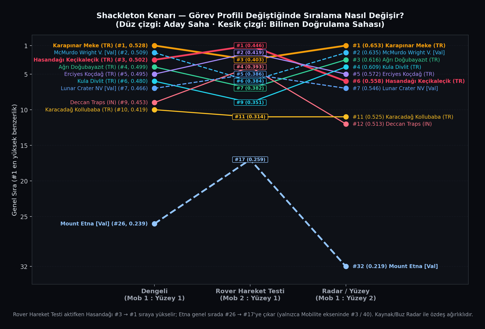
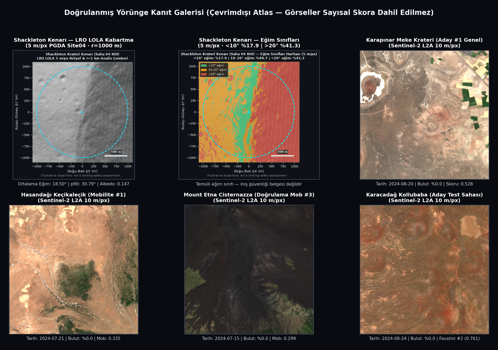

NASA SPACE APPS 2026 — KALICI AY ÜSSÜ KONUMLARI VE MARS · YÖNTEM RAPORU
Ay'dan Dünya'ya benzerlik: veri nasıl toplandı, işlendi ve puanlandı
Bir Dünya sahası Ay'ı her açıdan kopyalayamaz. Bu nedenle 40 Dünya sahasını 5 Ay Güney Kutbu referans bölgesine ekseni eksenine, her sayının kaynağını ve hata payını taşıyarak karşılaştırdık. Bu rapor o hattın bütününü anlatır: toplama, işleme, algoritmalar ve çözdüğümüz sorunlar.
1 · Veri nasıl toplandı
Her özellik için her iki cisme de aynı tanımı uygulayan, kamuya açık, doğrulanmış yörünge ürünleri kullandık. Tüm ham dosyalar data/raw/ altında, repoya girmeden tutulur.
| Özellik | Ay ürünü | Dünya ürünü | Çözünürlük |
|---|---|---|---|
| Eğim, pürüzlülük, rölyef | LRO LOLA PGDA DEM + hata haritalarıslope_mean · slope_p90 · roughness · relief | Copernicus GLO-30 / NASADEM (yedek)aynı dördü, aynı tanım | 5 m · 30 m |
| Yüzey albedosu | LOLA 1064 nm, ×0.38 geniş bant eşdeğerialbedo | MODIS MCD43A3.061albedo | 1000 m · 500 m |
| Sıcaklık genliği, termal atalet | LRO Diviner PCPtemp_amplitude · thermal_inertia | MODIS MOD11A2.061 yıllık ort. ΔTaynı kolonlar | 240 m · 1000 m |
| Bağlam (skorsuz) | LOLA shaded-relief tuvalimoon_atlas/ 15 png | Sentinel-2 L2A · ESA WorldCoverearth_atlas/ 40 webp | 5 m · 10 m |
Termal eksen bilinçli olarak askıda: Ay ve Dünya'da "bir günlük döngü" tanımı eşdeğer değil (240 saatlik kutup gecesi karşısında MODIS'in günlük ΔT'si kıyaslanamaz). Veriyi uydurmak yerine kolonları NaN bıraktık; sıcaklık hikâyesi 8 boyutlu karnede nitel olarak yaşıyor. Doğrulanmış hiçbir sayı bu karardan önce uydurulmadı.
2 · Veri nasıl işlendi
Ham DEM'den karşılaştırılabilir parquet tablosuna giden yol altı adım; her adımın çıktısı bir sonrakinin girdisi.
- İndirme ve kaynak kilidi
Her ürünün adı, sürümü ve çözünürlüğü indirme anında kayda geçer. Karakteristik adı ezbere yazılmış bir URL yok; her _src alanı CMR kaydıyla eşleşir.
- Metrik CRS'e yeniden projeksiyon
Eğim ve mesafe kutup stereografik (Ay) ve metrik (Dünya) projeksiyonda hesaplanır; derece cinsinden dikdörtgen ızgara üzerinde eğim hesaplamak bilimsel olarak yanlıştır, bunu daha baştan keseriz.
- Saha yarıçapı toplulaştırma (r = 1000 m)
Her site için ortalama ve P90 eğim, trendden arındırılmış yüksekliğin standart sapması (pürüzlülük) ve maksimum−minimum yükselti (rölyef) yarıçap içinde hesaplanır. Farklı çözünürlükler aynı tanım altında aynı çemberde karşılaşır.
- Veri sözleşmesi
Tek parquet dosyası per cismi: kimlik kolonları (site_id, role, lat/lon, radius_m), özellik kolonları ve her özellik için üç künye kolonu: _sd (1σ belirsizlik), _src (ürün + sürüm), _res_m (yerel çözünürlük). Kullanılamayan değer 0 değil NaN'dır.
- Sağlık kontrolleri
Her çıktı betik kapısından geçer: validate_contract --fail-on-mock sentetik/yer tutucu değer için hatayı yükseltir; min/maks/birim ve görsel kontrol her özelliğe uygulanır. 51 pytest testi yöntemi sabitler.
- Web'e aktarım
Parquet, Monte Carlo çizimleriyle birlikte statik JSON'a (962 KB) derlenir; React gözlemevi önceden hesaplanmış tabloları okur, tarayıcıda sıralama ve özel ağırlık hesabı aynı formüllerle tekrar eder.
3 · Algoritmalar
Dört bileşen: eksen başına benzerlik, belirsizlik yayılımı, görev profilleri ve kapama kümeleri.
Eksen başına Z-skoru benzerliği
Her aday saha, her eksen için referansla özellik uzayında uzaklık hesaplar. Düşük uzaklık, yüksek benzerlik demektir:
Monte Carlo belirsizlik yayılımı
Aday ve referansın _sd değerleri biliniyorsa, her ikisine bağımsız Gauss gürültüsü çekilir (n_boot = 200, seed = 0 + blake2b(axis, site_id) — aynı komut her zaman aynı aralığı üretir). q05–q95 yüzdelikleri, raporda köşeli parantezle gösterilen aralıktır. Belirsizlik bilinmeyen bir özellik asla 0 varsayılmaz; aralık NaN bırakılır, nokta skor korunur.
Görev profilleri: ağırlıklı birleşim
Eksenden toplam puana geçiş, normalize edilmiş ağırlıklı ortalamayla yapılır. Bir eksen NaN ise atılır ve kalan ağırlıklar yeniden normalize edilir — aritmetik hile yok, kayıp veri açıkça dışlanır. Üç hazır profil, gezgin aracın gerçek donanım testlerine karşılık gelir:
| Profil | Mobilite : Yüzey | Senaryo |
|---|---|---|
| Dengeli rover testi | 1 : 1 | Sürüş yeteneği ve yüzey parlaklığı dengeli |
| Tırmanma ve tekerlek testi | 2 : 1 | Eğim ve pürüzlülük tekerlek tutuşu için öne çıkar |
| Optik kamera ve güneş paneli testi | 1 : 2 | Albedo, kamera kontrastı ve panellere yansıyan ışığı belirler |
Sahalar: minimum saha testi portföyü
Tek bir saha tüm eksenleri kapatamaz. select_portfolio açgözlü küme kapama ile, eksen başına skor eşiğini geçen sahaları seçer; üç eksen için bu seçim minimum saha sayısını kesin verir. Hangi eksenlerin kapalı kaldığı çıktı olarak raporlanır — başarısızlık gizlenmez.
Kör doğrulama
Skorlama motoru saha rollerini hiç görmez; bilinen analoglar (Atacama, Etna/Mauna Loa, Haughton vb.) sıralamadan sonra listelenir ve her eksen için ilk-k aralığına girme oranı ölçülür. Beklentiler, sıralamalara bakılmadan önce kanıtlı site−eksen çiftleri olarak ayrı bir belgeye kaydedilmiştir — doğrulama bir iddia listesi değil, önceden tescilli hipotez testidir.
4 · Sorunlar ve nasıl çözdük
Yöntemin tamamı tek oturumda doğmadı; canlı demo, kapı testleri ve kod incelemesi her düzeltmeyi yakaladı. En bilgilendirici altı örnek:
Çözünürlük uyuşmazlığı: LOLA 5 m vs GLO-30 30 m
Coarse veri, ince sahayı çözüyormuş gibi sunulamaz. Çözüm: her iki cismi aynı r = 1000 m çemberinde toplulaştırmak, yerel çözünürlüğü _res_m ile beyan etmek ve karma piksel denetimi (mixed_pixel_audit) ile 30 m pikselin 1 km çemberdeki payını sayısal olarak raporlamak.
Termal döngü eşdeğersizliği (Karar #30)
Ay 240 saatlik kutup gecesi, MODIS günlük ΔT veriyor. Sayıyı uydurmak yerine eksen askıya alındı: kolonlar NaN, aralık yok, hikâye karnede nitel. Ağırlık yeniden normalizasyonu bu dışlanmayı puanlara zarar vermeden taşıyor.
Dar bant vs geniş bant albedo
LOLA 1064 nm tek dar bant, MODIS geniş bant. ×0.38 dönüşüm katsayısı belgelendi ve duyarlılık analizi (albedo_sensitivity) en iyi/orta/kötü senaryoların sıralamayı nasıl değiştirdiğini ayrı bir tabloyla gösterdi — dönüşüm sihir değil, beyan edilmiş bir yaklaşım.
"Radar kalibrasyonu" adı hatalıydı
Yüzey eksenimizin içeriği albedo; "yeraltı radar kalibrasyonu" demek teknik bir jüriye açık bir saldırı yüzeyiydi. Profil, rover'ın gerçek donanım testleriyle yeniden adlandırıldı (Optik kamera ve güneş paneli testi) — ağırlıklar ve tüm skorlar değişmedi. Aynı inceleme, termal askıda iken buz/ISRU profilinin optik profilin birebir kopyası olduğunu ortaya çıkardı; yinelenen seçenek kaldırıldı, skor değişikliği sıfır.
Canlı demo'da boş havuz hatası
"Optik kamera testi" seçilince 0/40 saha: React arayüz JSON'daki önceden hesaplanmış tabloyu görev anahtarıyla arıyordu, anahtar yeniden adlandırılmıştı ama veri değil. Çözüm: JSON yeniden üretildi, eski/yeni diff'inde skor satırlarının birebir korunduğu doğrulandı, derleme tazelendi. Hata canlı provada yakalandı — küçük ama örnek: veri ve arayüz sözleşmesi tek kapıdan geçmeli.
Her sayı kaynağını taşır
Provenance kapısı: _src'siz sayı rapora girmez, mock veri hatayı yükseltir, arayüzde tüm künye görünür. Grafik kütüphanesi isimleri (D3 radar) ve gerçek SAR literatürü ile "radar" kelimesi geçen başka hiçbir yer bu kapının dışında bırakılmadı.
5 · Yöntemin çıktısı
Aynı boru hattının ürettiği beş temel figür. Tümü data/processed/features_*.parquet üzerinden doğrulanmış veriyle çizildi.





Tek paragrafta özet
Beş Ay Güney Kutbu bölgesini referans alan, üç sayısal eksende (topografya, albedo, askıda termal) 40 Dünya sahasını Monte Carlo hata aralıklarıyla sıralayan, kör doğrulama ve küme kapama portföyüyle saha öneren, her sayısının kaynağını ve çözünürlüğünü beyan eden bir karar destek sistemi. Mars genişlemesi ve SAR tabanlı buz yolu, v2 karnesinde işaretli; yöntem aynen taşınır.